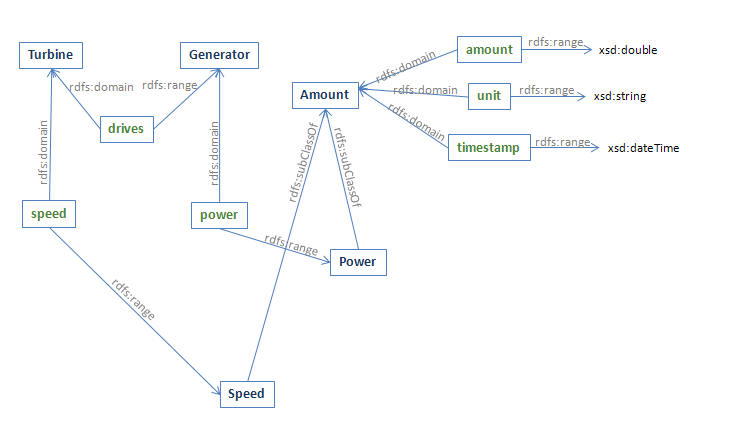
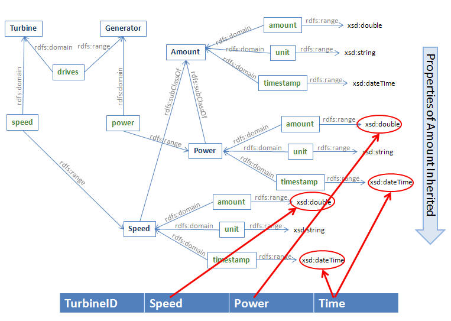
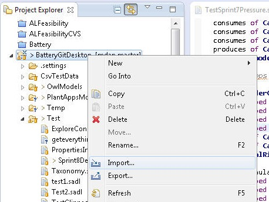
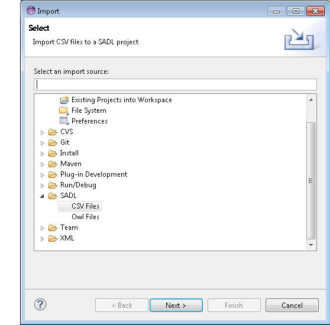
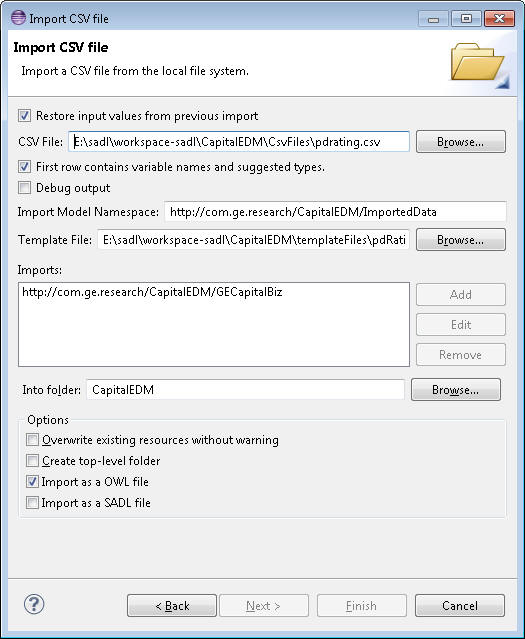

Note: the Xtext-based Template Editor for the Tabular Data Importer does not coincide exactly with the actual Template grammar. Hence there may be spurious errors, especially in transform statements, that are not actual errors. Please understand and follow the grammar as described in this document. A plain text editor can be used to create/edit template files to avoid confusion by spurious errors in the Template Editor.
It is very common to have data in a tabular format. For example, a spreadsheet can contain a table--a two-dimensional array of data. Relational databases contain "tables" of data, views create other "tables" of data, and SQL queries against relational databases also generate data tables. Tabular data is often accessed by row and column, e.g., the spreadsheet value in cell A3. The particular kind of data addressed by this Tabular Data Importer is columnar data. Each column represents a different set of data values, e.g., temperature in one column, pressure in another column, etc. Each row represents a set of values across types that are related in some way, e.g., each row is data about a different instance of something or for a different time.
The Tabular Data Importer enables the conversion of tabular data into an OWL model or into a SADL model. In the case of SADL model generation, the conversion of tabular data to OWL is followed by a translation from OWL to SADL. Conversion of tabular data to an OWL model is an ideal way to convert instance data in tabular format into an OWL input model for SadlServer. The process can also be initiated in the SADL-IDE by using the Eclipse File -> Import Wizard and selecting the SADL option in the list of kinds of imports followed by "CSV Files". The conversion mechanism is flexible and powerful. The OWL model generated can further be transformed into a SADL model if desired. A fundamental assumption underlying the Tabular Data Importer is that each row in the data table can be mapped to a set of model statements (graph nodes and edges) independent of the other rows in the data table. The Tabular Data Importer is implemented in the Java class com.ge.research.sadl.geonly.imports.CsvImporter.
Note further that it is possible to do an inverse mapping from OWL (or SADL, since it creates OWL) to tabular data. An appropriate pairing of mapping and inverse mapping creates a round-trip capability and could be the basis of providing a tabular editor for OWL models. The inverse mapping can take the form of a SPARQL query. The detailed associations between mapping and inverse mapping are discussed below.
An OWL model is a graph and can be represented as a set of RDF triples. Consider the following meta-model for a turbine-generator with data sensors. Sensor data will be read at multiple times creating time series of speed and power.
// Measurement Model
Unit is a top-level class.
Amount is
a
top-level
class,
described
by
amount
with
values
of
type
float,
described
by
unit
with
values
of
type
Unit,
described
by
timestamp
with
values
of
type
dateTime,
described
by
derived
with
values
of
type
CalculatedAmount.
{
Speed, Power} are types of Amount.Observation
is a type of Amount, described by observer with values of type string.CalculatedAmount
is a type of Amount, described by method with values of type string.PowerUnit
is a type of Unit, must be one of {Watt, KW, MW, HP}.AngularSpeedUnit
is a type of Unit, must be one of {RPM}.// Equipment Model
Turbine
is a class,Generator
is a class,Figure 1: Meta-Model for Measurement and Equipment for Example
Figure 2 below shows some of the concepts from the models in Figure 1, which will be used in the example tabular data import mapping. Class names are in dark blue bold, property names are in green bold.

Figure 2: Elements of the Models Relevant to Tabular Data Import
It is common to place some but not all of the values for an instance data set conforming to the above conceptual model in a data table. The data not explicitly represented in the table is implied by a knowledge of the context or domain of the data. Our objective is to provide an unambiguous mapping from the data table to the model. The diagram below shows one such mapping from concepts in the graph above to the columns of a data table.

Figure 3: Mappings from Tabular Data to Model Concepts
To convert the tabular data to a valid graph, we must know two things:
The conversion of tabular data to a graph model can be based on a template. The template provides the mapping from columns to model concepts and supplies the pattern of the RDF triples to actually be inserted into the generated RDF model. These triple patterns, after appropriate substitution of data from the table, become the statements to be added to the model. The mapping from table columns to an element of a triple pattern uses a placeholder in the triple pattern that identifies a table column. The placeholder is enclosed in angle brackets so that it is delimited on both ends and can be embedded in a longer name. The actual mapping from table value to part of a model statement can be accomplished in one of two ways.
Graph edges and nodes not represented in the tabular data but necessary to generated model statements are specified in the template triples as follows.
Each row of data is processed separately to create a set of model triples. Of course triples added to the model in the course of processing one row of data are now in the model and may be used in the processing of subsequent rows of data.
For the example in the figures above, the template triples are the following:
T<TurbineID> rdf:type Turbine
T<TurbineID> speed <1>
<1> rdf:type Speed
<1> amount <Speed>
<1> unit RPM
<1> timestamp <Time>
T<TurbineID> drives Gen<TurbineID>
Gen<TurbineID> rdf:type Generator
Gen<TurbineID> power <2>
<2> rdf:type Power
<2> amount <Power>
<2> unit MW
<2> timestamp <Time>
Note that there is a one-to-one correspondence between an instance of Turbine and an instance of Generator so we do not want to create a bnode and a new instance of Generator for each row of data in the table. Rather we want to create a named instance of Generator for each unique instance of Turbine. This is accomplished by the 7th line in the template. On the other hand, we want to create an instance of Speed and an instance of Power for each row of data so a bnode is appropriate for the instances of Speed and Power.
Besides the triple patterns discussed above several other pieces of information are required before we can generate a valid OWL or SADL model.
For our example above, we need to import two models: the measurement model (e.g., "http://sadl.org/measurement") and the equipment model (e.g., "http://sadl.org/TGConcepts"). (That is, unless the equipment model already imports the measurement model in which case we can just import the equipment model.)
The template file puts the template triples, the namespace of the generated model, the imports, and any validation and transformation statements into a persistent storage so that it can be reused easily, and so that it may be accessed and used in the SadlServer environment. The uri and import statements and any validation and transformation statements come before the template triples in the file layout. Here is the template file for the example above. Note that the import statement is similar to the one in a SADL model except that a period is not required at the end of the statement. Validation and transformation statements as well as other options are discussed below under Advanced Features.
uri "http://com.ge.research.sadl/testimport" as tginst
import "http://sadl.org/measurement"
import "http://sadl.org/TGConcepts"// this is a comment in a template file
T<TurbineID> rdf:type Turbine
T<TurbineID> speed <1>
<1> rdf:type Speed
<1> amount <Speed>
<1> unit RPM
<1> timestamp <Time>
T<TurbineID> drives Gen<TurbineID>
Gen<TurbineID> rdf:type Generator
Gen<TurbineID> power <2>
<2> rdf:type Power
<2> amount <Power>
<2> unit MW
<2> timestamp <Time>
The output of the Tabular Data Importer is either an OWL model or a SADL model. Within the SADL-IDE, the output folder is selected as part of the Import CSV wizard and the output filename is derived from the input CSV file name. When using CsvImporter directly or via SadlServer/SadlServerPlus, the model can either be written to a file by calling the method
boolean saveOwlModel(String filename)
or returned as a data stream by calling the method
DataSource getOwlModel(String format).
For calls to saveOwlModel, the extension of the filename determines the format as follows:
For calls to getOwlModel, the format argument determines the syntax of the the serialized model as follows:
A serialized SADL model can be retrieved by calling getSadlModel( ).
The Jena OntModel can also be exposed by calling getOwlModel with no arguments.
The Tabular Data Importer is meant to be compatible with SadlServer and, in fact, the most efficient way to use it is to call the SadlServer methods loadCsvData or sendCsvData, which take all of the required inputs and pass the resulting OWL model to the reasoner without intermediate serialization. See ISadlServer JavaDocs for details.
Tabular data, either as a named file or as a DataSource input stream can be passed to the Importer, the OWL model returned as a DataSource output stream, and this model passed to SadlServer as instance data input in the form of a DataSource. However, this approach requires that the OWL model be serialized and then parsed back into memory.
To complete our example, suppose that we had the following data in a CSV file.
TurbineID Speed Power Time 123456 23 0 "2011-08-29T05:58:35" 987654 5 0 "2011-08-29T06:10:22" 123456 100 50 "2011-08-29T06:22:55" 987654 65 0 "2011-08-29T06:31:43"
Importing this tabular data to the namespace "http://com.ge.research.sadl/testimport" gives the following OWL model in N3 format.
[ a measure:Power ;@prefix : <http://com.ge.research/sadl/testcsvimport#> .
@prefix rdfs: <http://www.w3.org/2000/01/rdf-schema#> .
@prefix measure: <http://com.ge.research.sadl/measurement#> .
@prefix owl: <http://www.w3.org/2002/07/owl#> .
@prefix xsd: <http://www.w3.org/2001/XMLSchema#> .
@prefix tgc: <http://com.ge.research.sadl/TGConcepts#> .
@prefix rdf: <http://www.w3.org/1999/02/22-rdf-syntax-ns#> .:Gen123456
a tgc:Generator ;
tgc:power
:T123456
a tgc:Turbine ;
tgc:drives :Gen123456 ;
tgc:speed
[ a
measure:Speed ;
measure:amount "23.0"^^xsd:float
;
measure:timestamp
"2011-08-29T05:58:35"^^xsd:dateTime ;
measure:unit measure:RPM
] ;
tgc:speed
[ a
measure:Speed ;
measure:amount "100.0"^^xsd:float
;
measure:timestamp
"2011-08-29T06:22:55"^^xsd:dateTime ;
measure:unit measure:RPM
] .
<http://com.ge.research/sadl/testcsvimport>
a owl:Ontology ;
rdfs:comment "This ontology was created from a CSV data
source."@en ;
owl:imports <http://com.ge.research.sadl/measurement> ,
<http://com.ge.research.sadl/TGConcepts> .
:T987654
a tgc:Turbine ;
tgc:drives :Gen987654 ;
tgc:speed
[ a
measure:Speed ;
measure:amount "65.0"^^xsd:float
;
measure:timestamp
"2011-08-29T06:31:43"^^xsd:dateTime ;
measure:unit measure:RPM
] ;
tgc:speed
[ a
measure:Speed ;
measure:amount "5.0"^^xsd:float
;
measure:timestamp
"2011-08-29T06:10:22"^^xsd:dateTime ;
measure:unit measure:RPM
] .
:Gen987654
a tgc:Generator ;
tgc:power
[ a
measure:Power ;
measure:amount "0.0"^^xsd:float
;
measure:timestamp
"2011-08-29T06:31:43"^^xsd:dateTime ;
measure:unit measure:MW
] ;
tgc:power
[ a
measure:Power ;
measure:amount "0.0"^^xsd:float
;
measure:timestamp
"2011-08-29T06:10:22"^^xsd:dateTime ;
measure:unit measure:MW
] .
Importing to a SADL model gives the following. Note that importing into SADL is actually a two-step process: first the tabular data is imported into an OWL model and then the OWL model is translated to SADL. The OWL to SADL translator is a work in-progress so generated OWL models may be correct while translation to SADL may not be complete.
uri
"http://com.ge.research/sadl/testcsvimport".
// This ontology was created from a CSV data source..
// This model was generated from an OWL model.
// It is read-only by default. To edit first change the file properties.import
"http://com.ge.research.sadl/TGConcepts" as tgc .
import "http://com.ge.research.sadl/measurement" as measure .// Classes and class restrictions
// Properties
// Instance declarations
Gen123456 is a Generator,
has tgc:power (a measure:Power,
with measure:timestamp "2011-08-29T06:22:55",
with measure:unit measure:MW,
with measure:amount 50.0),
has tgc:power (a measure:Power,
with measure:timestamp "2011-08-29T05:58:35",
with measure:unit measure:MW,
with measure:amount 0.0).
Gen987654 is a Generator,
has tgc:power (a measure:Power,
with measure:timestamp "2011-08-29T06:31:43",
with measure:unit measure:MW,
with measure:amount 0.0),
has tgc:power (a measure:Power,
with measure:timestamp "2011-08-29T06:10:22",
with measure:unit measure:MW,
with measure:amount 0.0).
T123456 is a Turbine,
has tgc:drives Gen123456,
has tgc:speed (a measure:Speed,
with measure:timestamp "2011-08-29T06:22:55",
with measure:unit measure:RPM,
with measure:amount 100.0),
has tgc:speed (a measure:Speed,
with measure:timestamp "2011-08-29T05:58:35",
with measure:unit measure:RPM,
with measure:amount 23.0).
T987654 is a Turbine,
has tgc:drives Gen987654,
has tgc:speed (a measure:Speed,
with measure:timestamp "2011-08-29T06:31:43",
with measure:unit measure:RPM,
with measure:amount 65.0),
has tgc:speed (a measure:Speed,
with measure:timestamp "2011-08-29T06:10:22",
with measure:unit measure:RPM,
with measure:amount 5.0).
Consider the mapping template file, repeated here for ease of viewing.
uri "http://com.ge.research.sadl/testimport" as tginst
import http://sadl.org/measurement
import http://sadl.org/TGConcepts// this is a comment in a template file
T<TurbineID> rdf:type Turbine
T<TurbineID> speed <1>
<1> rdf:type Speed
<1> amount <Speed>
<1> unit RPM
<1> timestamp <Time>
T<TurbineID> drives Gen<TurbineID>
Gen<TurbineID> rdf:type Generator
Gen<TurbineID> power <2>
<2> rdf:type Power
<2> amount <Power>
<2> unit MW
<2> timestamp <Time>
The inverse mapping is given by the following SPARQL query, which will generate a table
prefix afn:<http://jena.hpl.hp.com/ARQ/function#>
select (afn:substring(afn:localname(?turbine),1) as ?TurbineID) ?Speed ?Power ?Time
where {?turbine <rdf:type> <Turbine> .
?turbine <speed> ?speed . ?speed <rdf:type> <Speed> . ?speed <amount> ?Speed . ?speed <unit> <RPM> .
?speed <timestamp> ?Time .
?turbine <drives> ?gen . ?gen <rdf:type> <Generator> . ?gen <power> ?power . ?power <rdf:type> <Power> . ?power <amount> ?Power .
?power <timestamp> ?Time}
This query will generate a table of data with 0 or more rows and columns "TurbineID", "Speed", "Power", and "Time". The first line in the mapping creates an instance of a Turbine. The inverse mapping requires that we first get the localname of each Turbine instance and then drop the first character (the "T"). It is important to note that the timestamp for the Speed and Power must be the same for a row of data, so both timestamps with the same value appear in the query just as they did in the mapping file. For any given table of data mapped to the semantic model by the mapping template, this query will generate a data table identical to the original input, except of course that the rows may not be in the same order.
The example above assumes that the tabular data is very nicely organized with a single value per cell. Unfortunately data is not always so well-formed. Consider the data in this CVS extract:
CLAUSE NUMBER,CLAUSE TITLE,Clause Date,Workflow ID#,FUNCTION,POINT OF CONTACT,DETERMINATION,Month/Year of Determination, REVIEW FREQUENCY
52.203-15,Whistleblower Protections Under the American Recovery and Reivestment Act of 2009,3/11/2011,51014178,Lefal,Jessica Wenzell,Accept,3/11/2011,Perpetual
52.224-6,Subcontracts for Commerical Items,,,Production,Dick Mitchell/Frank Welch,,2/1/2000,
52.232-9,Limitation on Withholding of payments,,,Legal / Finance,Jessica Wenzell / John Feeney,Accept,4/1/1984,Perpetual
Here's the same data formatted as a table, for readability.
| CLAUSE NUMBER | CLAUSE TITLE | CLAUSE DATE | FUNCTION | POINT OF CONTACT | DETERMINATION | Month/Year of Determination | REVIEW FREQUENCY |
| 52.203-15 | Whistleblower Protections Under the American Recovery and Reinvestment Act of 2009 | 3/11/2011 | Legal | Jessica Wenzell | Accept | 3/11/2011 | Perpetual |
| 52.224-6 | Subcontracts for Commercial Items | Production | Dick Mitchell/Frank Welch | 2/1/2000 | |||
| 52.232-2 | Payment Under Fixed-Price Research and Development Contracts. | Finance/Legal | Cliff Conover / Jessica Wenzell | Accept | 4/1/1984 | Perpetual |
This data isn't as clean as the first example above. There are missing values. There are what appear to be multiple values in some cells. In the case of multiple values per cell, it is not always easy, desirable, or even possible to transform such data into a simple one-value-per-cell table. Therefore the Tabular Data Importer provides some additional features to help specify how to handle missing values and multiple values in a cell. The functionality is complicated by the ambiguity involved in deciding how to handle the multiple values--what is the scope of the multiplicity.
The Tablular Data Importer supports template statements, before the template triples, that begin with the keyword "validate" and which are used to validate the data in a particular cell in a table row. By default, if a cell is blank then any triple in the template that references that cell will simply not be added to the model. (Note: as of 8/1/2014 this does not appear to be the actual default behavior; rather an error occurs if a value is missing. See "validate all" below.) This default behavior can be made explicit by the validation statement, for a given element ID (column designator or transformation output):
validate <ElementID> not blank skip triple
or just
validate <ElementID> not blank skip
If we wish a blank cell to cause not just this triple but also the rest of the triples in the group to be skipped (see Group discussion below), the validate statement is:
validate <ElementID> not blank skip group
If we wish a blank cell to instead be considered an error, causing processing to be aborted, we can specify a pre-check using a "validate" statement of the form:
validate <ElementID> not blank abort
A third possible action to be taken when a cell is blank is to generate a unique URI fragment (localname) value (unique at the point of validation in the model which import is creating) and behave as if this generated value were in the cell. This form takes a baseName (last term in the statement). If the baseName ends in a series of digits (a number), this number will be used as a counter and incremented by 1 until the URI in the import model namespace with the generated URI fragment is unique. If it does not end in a number the counter will start at 1.
validate <ElementID> not blank generate baseName
Looking at validate statements more generally, they have the following syntax. The first word is "validate". The second element is the identity of a value, either a column in the table in the same syntax used in the template (see above) or a value output by a transformation of a value (see below). Just as in the template triples, there can be characters immediately before and/or after the column designator, in which case the string constructed by inserting the cell value is what is being validated.
The third element is the requirement placed on the values in the specified column expressed using keywords from the SADL language. These include the following which, except for the first two, are a subset of valid XSD datatypes:
not blank, exists, string, boolean, decimal, integer, dateTime, time, date, hexBinary, base64Binary, anyURI
Here "not blank" means the cell is not empty and "exists", short for "exists in model" which can also be used, means that the cell contains the identity of a pre-existing concept in the model. Here is an example of the use of "exists".
validate Gen<TurbineID> exists
The optional fourth element of the validate statement can either "skip", "abort", or "generate". If missing, the default consequence is "skip".
Only if the fourth element is "generate" is a fifth element valid, in which case it is the base name of the unique name to be created.
There is one additional form of validate used to make sure that a semantic constraint is satisfied in the model. This is "validate" followed by a triple pattern, e.g.:
validate Gen<TurbineID> rdf:type Generator
If a template included the two statements above, it would require that the concept "Gen<TurbineID>" already exists in the model and that it belong to the class "Generator". In this case, of course, we would not have this triple pattern in the template triples, as it is in the complete template above, because it would be redundant with the validation condition to then try to insert the triple into the model. This form may be followed by "skip" or "abort" and the scope (??).
As an additional example from the template above, if one wished to make sure that the "Speed" column is a number, one might use the validate statement below, which would cause the import to fail if the validate fails.
validate <Speed> decimal abort
The actual conversion of values to Literals in the model will be done in light of the range value of the property to which the value is to be assigned.
Instead of specifying the columns to validate, it is possible to use the form
validate all ....
This has the equivalent effect of creating a validate statement for each column in the tabular data.
The Tablular Data Importer supports template statements before the template triples that begin with the keyword "transform". The transform statement manipulates the content of the data in a table cell in a variety of ways. All transform statements must specify the identity of the input data and the identity of the output data. The syntax is as follows.
transform <inputID> to <outputID> ....
Currently supported transformations include split, encode, and find.
A split transformation specifies that the data being transformed contains multiple values or parts. The data value is divided into tokens using the specified set of delimiters. The behavior is that of the Java String's split function. The split transformation has the following form.
transform <inputID> to <outputID[]> split "delimiter"
The inputID might be a column designator or it might be the output identifier of another transformation. The square brackets in the outputID are optional but serve as a reminder that the result of a split transformation is expected to be an array of values. The "delimiter" is a regular expression which is passed to the Java split function and therefore certain characters will need to be escaped to be interpreted as characters. To split the values in the FUNCTION column of the data at the beginning of this section, use a statement like
transform <FUNCTION> to <fct[]> split "/"
A specific array element of the output of a cell splitting transformation can be referenced by the output name followed by the array element designation, starting with 1. Thus one could reference the first output of the above transformation as "fct[1]". When this is used in another statement, the name and the array element designation are all placed inside the angle brackets. The array element designation can be one of the following.
For example, if we wanted to separate the names in the POINT OF CONTACT column above into separate persons and then into first name and last name, we might do so with the following transform statements, where the second transform statement splits the results of the first:
transform <E> to <Es[]> split "/"
parse <Es[1]> to <Nm1[]> split " "
parse <Es[2]> to <Nm2[]> split " "
In this case the last row of the data above would yield these values:
Of course we may not know the number of results from the split. Handling iteration over split results is covered below in Scope of Repetition and Groups of Triple Patterns in a Template.
The replace transformation does character substitution within a value. A replacement is identified by two colon-separated strings. There may be multiple replacements separated by commas, in which case the replacements will be done sequentially. These colon-separated strings form the arguments to the Java String replaceAll method and are regular expressions. Suppose, for example, that one wished to use the name(s) in the POINT OF CONTACT column to create instances of the class Person in a model. The spaces between first name and last name are not legal characters in a model instance URI but we might replace the space with an underscore.
transform <E> to <Es[]> split "/"
transform <Es> to <Nm> replace " ":_
The result of this transformation on the data in the first row of the table above would yield a value for Nm of "Jessica_Wenzell". The result for the last row in the table would yield for Nm an array of two values, "Cliff_Conover" and "Jessica_Wenzell".
It is important to understand how the text following replace is parsed and what special characters are involved. The special characters are comma, colon, double quote, and single quote (not backquote):
Note that white space around the comma and colon delimiters will be trimmed and so is not significant.
Examples of regular expressions and replacements which may be useful for creating legal URI fragments include the following:
Sample transform snippet What it does encode " ":_ replace all spaces with underscores encode [^a-zA-Z0-9]:_ replace all characters which are not letters or digits with an underscore encode " ":_,#:No,&:_And_ replace all spaces with underscores, replace "#" with "No", replace "&" with "_And_"
The encode transformation does optional character substitution within a value, just like replace, followed by URL encoding. If character substitution is to be done the syntax is the same as the replace transformation. If not then there is nothing following the "encode" keyword and the URL encoding is performed on the input to produce the output.
The find transformation uses Jena LARQ (SPARQL + Lucene) to find a match within the existing model. Results that include Lucene full-text search results can be ordered by match score to make the best match the first in the array of returned results. For example, suppose that column A of our data is the serial number of a particular part and B of our data is a textual description of the type of the part, and suppose that we wished to create an instance in a model of the part with a type, subclass of "Part" (if found), and that in any case the instance is of type "Part". Then our template would include:
transform <B> to <Bf[]> find "select distinct ?doc ?score where {(?lit ?score) <http://jena.hpl.hp.com/ARQ/property#textMatch> '+<B>' . ?doc ?p ?lit . ?doc <rdfs:subClassOf>+ <Part>} order by DESC(?score)"
validate <Bf[1]> exists skip
P<A> rdf:type Part
P<A> rdf:type <Bf[1]>
For details of how "textMatch works, refer to Apache LARQ and Apache Lucene documentation.
While the transformation capabilities of split, encode, and find are intended to handle many common situations, not all transformation needs can be foreseen. The CSVImporter will be extended to support user-defined functions encoded in Java and with arbitrary argument lists. A user-defined function must be implemented in a class which extends com.ge.research.sadl.geonly.template.userdefined.Transform. A user-defined function might, for example, allow a user to enable a transformation involving values from multiple columns in a row.
When there are multiple values in a table cell, the issue arises as to the scope of the multiplicity. For example, suppose census data put the family name in the first column of a table, the given names of all family members in the second column, separated by colons, and the birth dates of all family members, in the same order as first names, in the third column, again separated by colons. Suppose that we wished to create a Person instance for each unique Person. Consider the following data and template.
Smith, George:Sue:Henry:George, 2/8/1978:3/5/1978:10/3/2001:1/30/2003
import "http://..."
validate <A> not blank
validate <B> not blanktransform <B> to <FN[]> split ":"
transform <C> to <BD[]> split ":"<1> rdf:type Person
<1> lastName <A>
<1> firstName <FN[i]>
<1> dateOfBirth <BD[i]>
In this data, there are two Persons named "George Smith" but they are not the same person because they were born on different dates. How do we cause the template to generate four distinct instances of Person rather than one instance of Person with three firstName values and possibly four dateOfBirth values? (We could add "validate <C> not blank" to require birth date to be known, thereby making it more likely that there are four dateOfBirth values, but that would not guarantee that there aren't just 3.) This question is answered by the use of grouping of triple patterns within a template.
A template, as described above, can include any number of triple patterns, each of which is handled by the importer in a manner independent of all others. For reasons mentioned above and which will be illustrated by examples, it may be desirable to group triple patterns together in sets. This is done by surrounding two or more triple patterns with curly brackets. For instance, in the example above the grouping identifies a set of related triples and uses a common index name in the transformation output of first names and dates of birth to match firstName and dateOfBirth values. Here's the last part of the template repeated but with the described grouping modification:
{<1> rdf:type Person
<1> lastName <A>
<1> firstName <FN[i]>
<1> dateOfBirth <BD[i]>}
The curly brackets tell us that if there are multiple values then we need to repeat the entire set of triples identified with the brackets. The lower-case "i" is an index name (any name not used for something else in the template will do) tells us that we need to match each value in the split of a cell of column B with the corresponding value in the split of a cell of column C (same row of course). If the number of values in columns C and D for a given row are not the same then an error occurs.
As an example, here is the SADL model generated by applying this grouping to the census data row above:
// Instance declarations
A
Person,
has lastName "Smith",
has firstName "George",
has dateOfBirth "1978-02-08".A
Person,
has lastName "Smith",
has firstName "Henry",
has dateOfBirth "2001-10-03".A
Person,
has lastName "Smith",
has firstName "Sue",
has dateOfBirth "1978-03-05".A
Person,
has lastName "Smith",
has firstName "George",
has dateOfBirth "2003-01-30".
By comparison, suppose that the grouping in the template triples were as follows:
<1> rdf:type Person
<1> lastName <A>
{ <1> firstName <FN[i]>
<1> dateOfBirth <BD[i]>}
Then the generated data would look like this:
// Instance declarations
A
Person,
has lastName "Smith",
has firstName "George",
has dateOfBirth "1978-02-08",
has firstName "Sue",
has dateOfBirth "1978-03-05",
has firstName "Henry",
has dateOfBirth "2001-10-03",
has dateOfBirth "2003-01-30".
Now let's apply all of the template concepts discussed to the data in the table at the beginning of this section to create a complete template we might use to translate some of the data to a semantic model. If we wanted to create and populate Person instances from the data, we might use the following template:
import "http://com.ge.research.sadl/contracts2"
validate <A> not blank abort
validate <C> date
validate <G> date
validate <fct> existstransform <D> to <fct[]> split "/"
transform <E> to <poc[]> split "/"
transform <poc> to <puri[]> encode "[ ]+":"_"
transform <poc> to <Nm[]> split " "<1> rdf:type ReferenceClause
<1> clauseNumber <A>
<1> clauseTitle "<B>"
<1> revisionDate <C><2> rdf:type ClauseReviewSOP
<2> appliesToClauseNumber <A>
<2> appliesToRevisionDate <C>
<2> function <fct[*]>
<2> reviewFrequency <I>
{
<puri[i]> rdf:Type Person
<puri[i]> firstName <Nm[1]>
<puri[i]> lastName <Nm[2]>
<2> pointOfContact <puri[i]>
<2> determinedBy <puri[i]>
}
This template requires that column A not have any blank cells or the data import will fail, that columns C and G contain values that can be converted to a date (if there are values; value are not required), that the values in column FUNCTION (column D) be existing instances in the model, that values in column D be parsed to multiple values by the delimiter "/" (although multiple values are not required), and that values in column E be first parsed by the "/" delimiter into multiple values and that each of these values then be parsed by the space delimiter (actually any number of spaces treated as a single space). The curly brackets around the last 5 triple patterns, along with the lower-case "i" in the split results of column E, mean that we will iterate over all of the first split results on column E and insert the entire set of triples into the model for each split result.
The "incremental" keyword may be placed on a line by itself after the import statements and before any other statements. If "incremental" is not specified, an import will create a new data model of the specified name (uri), replacing any model by that name that might have previously existed. However, if the "incremental" statement is present the CSVImporter will look for a mapping from the specified model name (uri) to a file or TDB repository already existent and if such is found will open it and add the triples from the import operation to that file or repository.
The CSVImporter supports inferencing over the imported triples and the inclusion of any inferred triples in the generated output. Additionally, a chunk size may be specified which indicates the number of rows of data to be imported and inferred over before output is generated and the process is repeated. When inference with chunking is specified, the statement may also specify a parallelization of the computation over a specified number of threads. For inference on a single machine, this number should be no more than one less than the number of CPUs available. The entire statement is of the form:
infer [chunk <n> [parallel <n>]]
where the square brackets indicate optional elements and are not part of the syntax and "<n>" indicates an integer.
If pre-computed inference is specified with an infer statement, the format of the output is automatically changed to Jena TDB. There are several reasons for using Jena TDB with pre-inferred models. If any inferencing is to occur with currently supported reasoners at query time, an in-memory inferred model must be created. This means that large models require large amounts of memory on the host machine. However, when inference is pre-computed, a Jena TDB repository, which is an indexed triple store, can be efficiently queried without generating an in-memory model. This greatly increases scalability. In addition, the TDB repository serves as a filter so that the same triple is not found more than once in the model. If the CSVImporter were writing output to a file, so as to avoid a large in-memory model, triples could be written multiple times.
Validation, if it has any effect, reduces the amount of data that is mapped from the tabular data to the OWL model. This reduction in data has no inverse mapping as the data not mapped is not in the model to map back to tabular form. Therefore the inverse mapping provides a subset of the original data.
When the tabular data contains a column whose content is used to identify or create the class (rdf:type) to which new instances identified in a another column and/or attributed in other columns belong, the inverse mapping is usually not possible because the query engine will return all types of an instance, not just its direct type. Of course if there is no transitive reasoning over class hierarchies, then the inverse transform may work. The inverse mapping query will return the rdf:type(s) that exist in the model and unless the reasoner supports specialized properties to identify direct types, it will not be possible to tell which is the direct type.
When a split transform is used to generate the semantic data model, possibly with grouping, the inverse transformation becomes more complex. For example, the CSV data
Smith, George:Sue:Henry:George, 2/8/1978:3/5/1978:10/3/2001:1/30/2003
generates the SADL model
// Instance declarations
A Person,
has lastName "Smith",
has firstName "George",
has dateOfBirth "1978-02-08".A
Person,
has lastName "Smith",
has firstName "Henry",
has dateOfBirth "2001-10-03".A
Person,
has lastName "Smith",
has firstName "Sue",
has dateOfBirth "1978-03-05".A
Person,
has lastName "Smith",
has firstName "George",
has dateOfBirth "2003-01-30".
but what SPARQL query would regenerate the CSV data row from the OWL equivalent of the SADL model?
The template file constitutes a declarative mapping from the tabular data to the graph of the ontology instance data model. It can be difficult to determine exactly why the resulting OWL or SADL file isn't what was expected. To assist in this, a log file containing an ordered record of each triple insertion into the ontology model, along with information about each validation skip that occurred, may be created by calling "enableTriplesAddedInOrderLogging(String filename)" before doing the import. In the SADL-IDE, such a log file is created in the Temp folder of the project if "Debug output" is checked on the CSV import wizard. Each line in the log is prefixed with the row number in the CSV data input file being processed. This allows the user, for any row in the input data, to see exactly how each triple in the template file is processed. Additional information is available when importing to SADL because opening the SADL file in the SADL-IDE will do some validation of the ontology, providing warning or error markers in the editor.
Figure 4 shows how one initiates importing of CSV data in the SADL-IDE.

Figure 4: Popup Menu for Import
Selecting import on this popup menu leads to the dialog shown in Figure 5. Under SADL, CSV Files should be selected, then click Next.

Figure 5: Import Popup Dialog
Clicking Next leads to the Modal Dialog shown in Figure 6.

Figure 6: Final CSV Import Wizard Dialog
The First check box on the final Wizard dialog shown in Figure 6 controls whether the data entered in the previous use of the dialog is auto-filled. The next entry allows entry or browsing for the input CSV file. The 3rd line should be checked if the first row in the CSV data file contains column headers. Check "Debug output" to cause the CSVImporter to create a detailed log of each triple generated from each input row. The 5th row will be auto-filled with the model name (uri) in the template file. Editing this field will override the template value. The next input field and browse button allow specification of the template file to be used. Like the model name, imports is auto-filled from the template file content but can be used to override these values. The "Into folder" setting identified the Eclipse project and possibly subfolder into which the import output file is to be written. Finally the Options section allows selection of the output file format, OWL or SADL.
Note: if you Import as a SADL file and later change to Import as an OWL file, you must delete the SADL file or you will have two models with the same URI, which will be an error. The same is true if switching from OWL to SADL--you will need to delete the OWL file. You may need to clean/build the project after switching import file type to rebuild the mapping file.